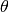
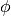
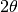

Library Reference - Phasing Operations¶
Save Sequence¶
Save sequence data to a NumPy file.
Parameters:
- Output file
- User provided path string for the output NumPy file.
Save Support¶
Save Support data to a NumPy file.
Parameters:
- Output file
- User provided path string for the output NumPy file.
Save Residual¶
Save Residual data to a NumPy file.
Parameters:
- Output file
- User provided path string for the output CSV file.
Save PSF¶
Saves the internally stored Point Spread Function data to a NumPy file.
Parameters:
- Output file
- User provided path string for the ouput NumPy file.
Co-ordinate Transformation¶
Perform a co-ordinate transformation on either sequence data or an input array. The transformation is derived using the principles as demonstrated by Pfeifer, M.A. .
The generated co-ordinate array is stored internally and is accessible for viewing with the memory array keyword memorycoords.
Parameters:
- Transform from
- Source from which to perform the transformation against.
- Transform type
- Transform in real or reciprocal space.
- Input data
- User provided path string to the input NumPy file.
- Output amp file
- User provided path string for the output amplitude VTK file.
- Output phase file
- User provided path string for the output phase VTK file.
- Rocking curve type
- Theta () or Phi () rocking curve measurement.
- Array binning
- Amount by which the array was
binned. See the section on binning for further details. - 2theta
-  angle.
- d theta
- Increment angle for rocking curve measurement.
- phi
- angle.
- d phi
- Increment angle for rocking curve measurement.
- Pixel {x,y} (microns)
- Detector pixel dimensions, in microns.
- wavelength (nm)
- Wavelength of light used in experiment. Units of nanometres.
- Arm length (m)
- Distance from the sample to the centre of diffraction pattern at the detector. Units of metres.
- CCD x-axis flip
- Reverse the direction of detector x-axis readout. Required for some PI CCD detectors.
Experimental geometry:

Curved arrows show the direction of rotation of object (as opposed to the axis). The beam is assumed to travel along the positive  direction.
direction.
Save Co-ordinates¶
Save Co-ordinates data to a NumPy file.
- Output file
- User provided path string for the output NumPy file.
Note
A co-ordinate transformation must occur prior to this operation.